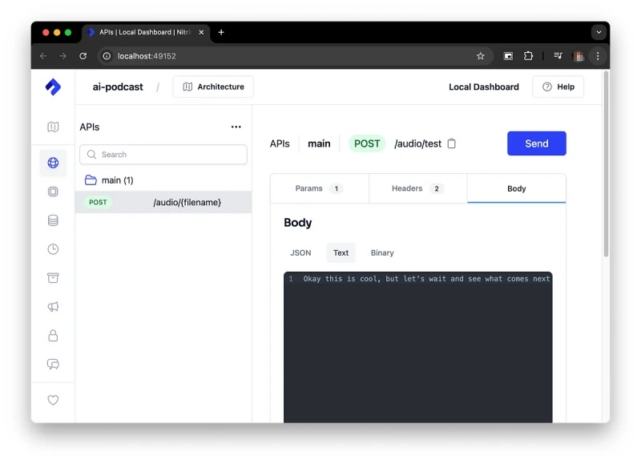
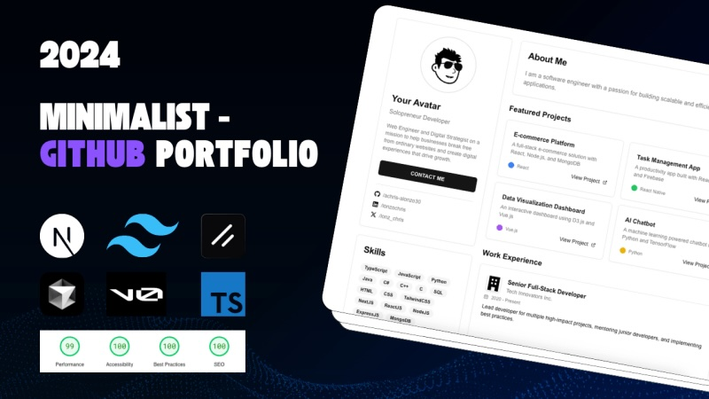

Building AI Workflows: Combining LLMs and Voice Models
#ai
#machine-learning
#python

Learn how to create an AI-powered, fully autonomous podcast using a combination of a text-to-speech
model and Nitric's cloud tools. This guide walks you through setting up your project, managing
dependencies, defining audio generation jobs, and deploying your application to the cloud. You'll
start by generating audio content...
Python is No More The King of Data Science
#python
#data-science
#programming-language
Python has long been the dominant language in data science due to its powerful libraries like Numpy,
Pandas, and scikit-learn. However, it faces challenges that could jeopardize its top position. The
post discusses five reasons why Python's dominance...
Minimalist Github Portolio 2024
#github
#portfolio

I deleted my entire portfolio yesterday. Not because it was bad. Because it wasn’t working. The
transformation taught me that your portfolio isn’t about you. It’s about what you can do for others.
Sometimes starting over is the best way forward. Want both portfolio versions? Clone them here...